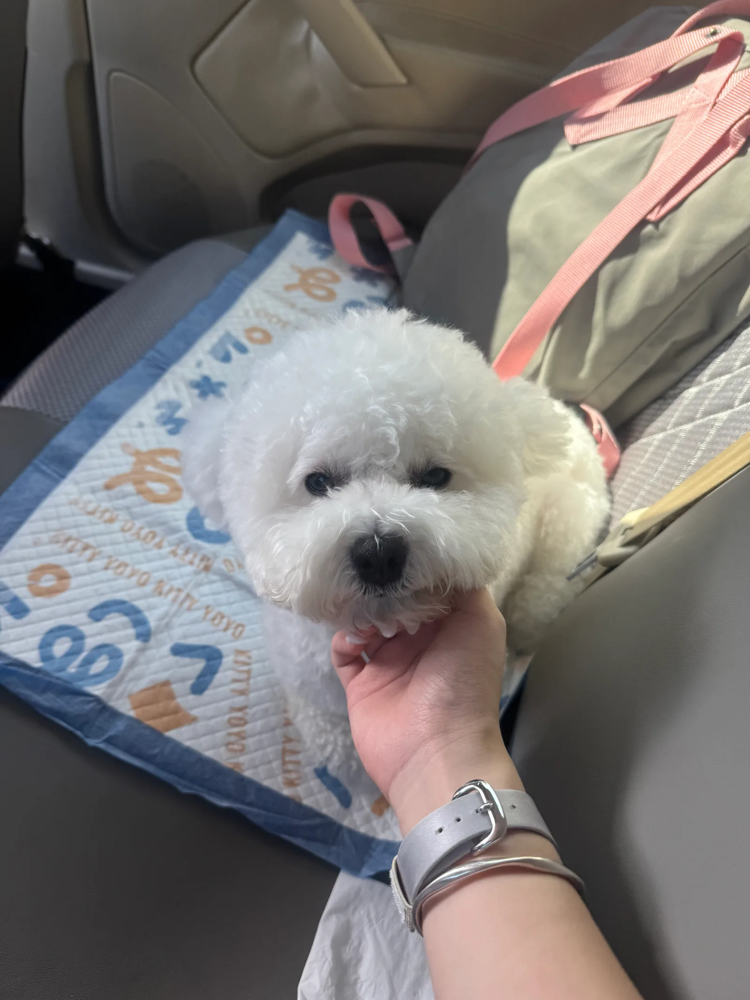

PERSONAL WEBSITE关于我
关于我
先介绍一下我的学习和日常。
姓名康雯淇
年龄20 岁
星座双子座
家乡湖北黄冈
学校湖南大学
专业经济学 · 大三
在学校
我在湖南大学读经济学。除了专业课程，平时也会用 Stata 和 Python 做数据处理。参加过建模竞赛、创新创业项目，做过学生工作，也有过实习经历。更详细的经历放在下方的简历里。
家里
我从小在黄冈长大，家里有爸爸妈妈和点点。点点是一只四岁的比熊犬，右边是它坐车时拍的照片。
我的简历
想了解我的学习与实践经历，可以下载 PDF 版简历。